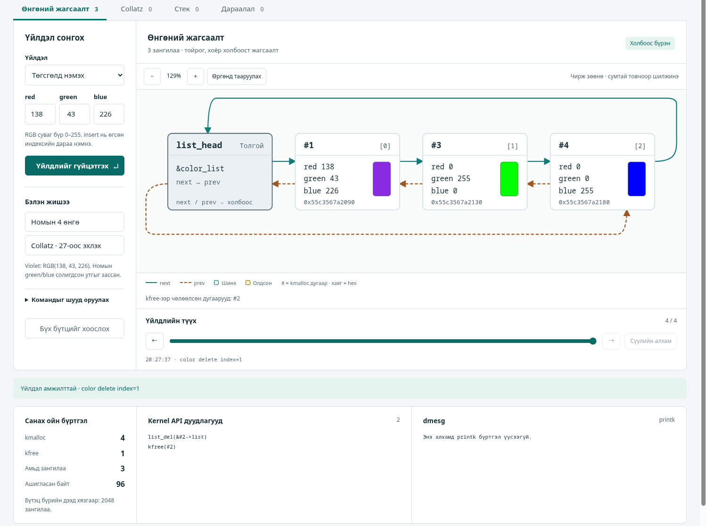

color example: толгойноос #1 → #2 → #3 → #4 → толгой руу next (тасралтгүй), prev (тасархай). Тоолуур: kmalloc 4, kfree 0, амьд 4, 128 байт.| Гүйцэтгэсэн оюутнууд: | Б. Лхамрагчаа (B241940102) |
| Г. Үлэмж (B232270805) | |
| Т. Буянтөгс (B231910034) | |
| Э. Төгсбаяр (221910021) | |
| Ө. Чинзориг (200900028) | |
| Б. Идэрбат (B242270075) | |
| Хуваарилалтын код: | IV-2-4 |
| GitHub: | https://github.com/Ulmj7/OS_BD1_4-2-4 |
Асуудал. Сурах бичгийн 3-р бүлгийн 4-р төсөл нь кернелийн дугуй хоёр холбоост жагсаалтыг ашиглан өнгөний жагсаалт болон Collatz дарааллыг хадгалуулахыг шаарддаг. Багшийн даалгаврын дагуу үйлдэл бүрийн дараа жагсаалтын бүтэц хэрхэн өөрчлөгдөхийг график дээр харуулах ёстой.
Шийдэл. Модулийн жинхэнэ эх кодыг өөрчлөхгүйгээр хоёр аргаар шалгасан. Нэгдүгээрт, кернелийн функцийг дуурайдаг өөрсдийн жижиг давхарга («shim») дээр энгийн программ болгон ажиллуулсан. Хоёрдугаарт, ажиллаж буй кернелийн жинхэнэ header-тэй .ko болтол хөрвүүлж, багийн гишүүн жинхэнэ кернелд ачаалсан. Ижил жагсаалтын API дээр ажилладаг C engine, python сервер, вэб UI хийж, графыг зөвхөн engine-ийн бодит төлвөөс зурсан.
Туршилт. make test нь 4 C тест, 9 сценарийн бүлэг, 12 HTTP тестийг ажиллуулдаг. Бүгд санах ойн болон тодорхойгүй үйлдлийн алдааг барьдаг хэрэгсэлтэй (AddressSanitizer, UndefinedBehaviorSanitizer) ажиллана. Мөн make module хоёр модулийг жинхэнэ кернелийн header-тэй хөрвүүлсэн (8.7). Багийн гишүүн тэдгээрийг өөрийн машин дээр insmod-оор ачаалж, dmesg-ийн гаралтыг авсан (8.8).
Гол үр дүн. Бүх тест амжилттай (All available tests passed.). Номын 4 өнгө, Collatz 27 (112 зангилаа), 837799 (525 зангилаа) зөв гарсан. Санах ой алдагдаагүй: авсан бүх санах ойг буцаасан. 1,254 байрлалд санах ойн алдааг зориудаар үүсгэж, 5,000 санамсаргүй үйлдлийг энгийн массив загвартай харьцуулж шалгасан. Номын жишээнд violet өнгийн ногоон, цэнхэр утга солигдсон байсан тул зөв утгыг (138, 43, 226) ашигласан. Жинхэнэ кернел дээр өнгөний 4 мөр, Collatz 27-ийн 112 утга (оргил 9232) shim-ийн үр дүнтэй таарсан.
Хязгаарлалт (товч). Кернел дээрх шалгалт нь нэг машин, нэг кернелийн хувилбар дээр багийн гишүүний нэг удаагийн ажиллуулалт. Буруу ба захын start, ENOMEM замууд зөвхөн shim дээр шалгагдсан; санах ойн алдагдлыг (kmemleak) кернел дээр шалгаагүй. UI-г зөвхөн Brave-ээр шалгасан. AI хэрэгслийн туслах хэрэглээг 5.8-д тайлбарлав.
Кернел өөрийн өгөгдлийн бүтцийг өөрөө удирддаг. Linux «дугуй хоёр холбоост жагсаалт»-ыг өргөн хэрэглэдэг: элемент бүр өмнөх болон дараагийн элементээ мэддэг, сүүлийн элемент нь эхнийхтэйгээ холбогдсон. Бидний зорилго энэ жагсаалтыг номын даалгаврын дагуу хэрэгжүүлж, үйлдэл бүрийн дараа холбоос (заагч) юу болдгийг нүдээр харуулах явдал юм.
Linux процессын жагсаалт, ажлын дараалал, санах ойн удирдлагад ийм жагсаалтыг хэрэглэдэг. Үүнийг ойлговол кернелийн код унших үндэс болно. Заагчийн алдаа кернелд хамгийн аюултай алдаа тул холбоосыг тусгай шалгагчаар болон дээрх хэрэгслүүдээр шалгасан.
| Хамрагдсан | Хамрагдаагүй |
|---|---|
Part I, Part II-ийн модулийн эх код: shim дээр ажиллуулсан; Kbuild-ээр жинхэнэ кернелийн header-тэй .ko болтол хөрвүүлсэн; багийн гишүүн жинхэнэ кернелд ачаалсан (color_list, collatz start=27); shim; C engine, python сервер, офлайн вэб UI (өнгө, Collatz, стек, дараалал); автомат тест; Manual. |
Кернел дээр: буруу ба захын start, ENOMEM, kmemleak, бусад машин ба кернелийн хувилбар; олон процессор дээрх зэрэгцээ хандалт; peer review (энэ хувилбарт хийгдээгүй). |
Эх сурвалж: Operating System Concepts, 10-р хэвлэл, 3-р бүлгийн «Project 4 — Kernel Data Structures» ба Exercise 3.21 (Collatz). Шаардлага бүрийг хэрэгжилт, нотолгоотой нь доор харууллаа.
| № | Шаардлага | Хэрэгжилт | Төлөв |
|---|---|---|---|
| 1 | struct color (red, blue, green) дотор list_head; static LIST_HEAD(color_list) | src/kernel/color_list.c | Хэрэгжсэн |
| 2 | Модулийн эхэнд 4 өнгийг kmalloc-оор аваад жагсаалтын төгсгөлд нэмэх | ижил файл; test_color_module дараалал, тоог шалгана | Shim ✓ · кернел ✓ |
| 3 | Жагсаалтыг гүйлгэж printk-ээр хэвлэх (dmesg) | хэвлэсэн мөр байтаар таарсан (8.2) | Shim ✓ · кернел ✓ |
| 4 | Дуусахдаа list_del ба kfree-ээр чөлөөлөх | тестэд амьд зангилаа 0 | Shim ✓ · кернел: rmmod алдаагүй |
| 5 | Part II: collatz модуль, start параметр (анхдагч 25) | src/kernel/collatz.c; 25 → 24 зангилаа | Shim ✓ · кернел: start=27 |
| 6 | Collatz дарааллыг жагсаалтад хадгалж, хэвлэж, дуусахдаа чөлөөлөх (n тэгш бол n/2, сондгой бол 3n+1) | 7 лавлагаа Python-оор бие даан бодсон дараалалтай таарсан (8.3) | Shim ✓ · кернел: start=27 |
| 7 | Багшийн UI: Kernel structure graph (нэмэх, устгах, хайх → граф) | src/ui/static/* ба engine | Хэрэгжсэн |
«Shim ✓» — shim дээрх автомат тестээр шалгагдсан. «Кернел ✓» — модулийг жинхэнэ кернелд ачаалахад dmesg-ийн гаралт shim-ийнхтэй таарсан (8.8; багийн гишүүний гүйцэтгэсэн). Кернел дээр kfree-ээр чөлөөлснийг хэмжээгүй: rmmod алдаагүй дууссан, харин leak 0 нь зөвхөн shim дээр. Анхдагч start=25 кернел дээр ажиллаагүй (ачаалахдаа 27 өгсөн). Кернелд ачаалахаас өмнөх алхам — .ko болтол хөрвүүлсэн — 8.7-д.
БД1 Guide-ийн нийтлэг шаардлагууд (оролт өөрчилж дахин турших, буруу оролтыг ойлгомжтой мэдээлэх, өөрсдийн нэмэлт тест, Manual-аар дахин ажиллуулах) мөн хэрэгжсэн (6, 8-р бүлэг).
Жагсаалтын элемент бүр өөрийн өгөгдөл болон хоёр заагчтай: next нь дараагийн элементийг, prev нь өмнөх элементийг заана. Сүүлийн элементийн next нь жагсаалтын толгойг заадаг тул жагсаалт тойрог үүсгэнэ. Иймээс элемент нэмэх, устгахад зөвхөн түүний хоёр хөрш өөрчлөгдөнө. Харин тодорхой утгыг хайхад элементүүдийг дарааллаар нь шалгана.
Linux өгөгдлийн бүтцийн дотор struct list_head гэсэн жижиг хэсгийг шигтгэдэг. Тиймээс нэг жагсаалтын код ямар ч бүтэц дээр ажиллана. Жагсаалтын хэсгээс бүтцийн эхлэлийг list_entry олно. Үйлдлүүдийн хугацааг хүснэгт 2-т харуулав: O(1) гэдэг нь жагсаалтын уртаас хамаарахгүй, O(n) гэдэг нь уртад хувь тэнцүү гэсэн үг.
| Үйлдэл | Kernel API | Хугацаа |
|---|---|---|
| Толгойд эсвэл төгсгөлд нэмэх | list_add, list_add_tail | O(1) |
| Заагдсан элементийг устгах | list_del (дараа нь kfree) | O(1) |
| Утгаар хайх, гүйлгэх | list_for_each_entry | O(n) |
| Гүйлгэж байхдаа устгах | list_for_each_entry_safe | O(n) |
Эерэг бүхэл n-ээс эхэлж, n тэгш бол n/2, сондгой бол 3n+1 болгон n = 1 болтол үргэлжилнэ. Дарааллын урт урьдчилан мэдэгдэхгүй тул жагсаалтад хадгалахад тохиромжтой. Утга хурдан өснө: 837799-ээс эхлэхэд 525 зангилаа үүсэж, оргил нь 2,974,984,576 болдог бөгөөд энэ нь 32 битийн тэмдэгтэй бүхэл тооны (int32) дээд хязгаараас (2,147,483,647) их. 2,147,483,647-оос эхлэхэд оргил нь 1,235,346,792,567,892 хүрнэ. Тиймээс утгыг 64 битээр хадгалсан.
Нэг үйлдэл дараах дарааллаар явагдана. (1) Хэрэглэгч UI дээр үйлдэл сонгоно. (2) Сервер командыг engine-д нэг мөр болгон өгнө. (3) Engine жагсаалтын API-г бодитоор дуудаж, нэг мөр JSON хариу өгнө. (4) UI графыг зөвхөн энэ хариунаас зурна. Командын хэлбэр, оролтыг Manual-ын 8.1.4-өөс, алдааны кодыг 8.1.8-аас үз.
Engine үйлдэл бүрийн дараа холбоосыг шалгагчаар (kds_verify) шалгана: next ба prev хоёр харилцан таарч байх ёстой, урагш ба хойш тоолсон элементийн тоо адил байх ёстой. Алдаатай команд төлөв болон санах ойн тоолуурыг өөрчилдөггүй. Эвдэрсэн жагсаалтад ч engine гацахгүй, UI дээр улаан «?» тэмдэг гарна. Процесс дуусахад амьд зангилаа үлдсэн бол LEAK гэж бичиж, 3 гэсэн код буцаана.
C (-std=gnu11 -Wall -Wextra -Werror), GNU make, python3 (зөвхөн стандарт сан), цэвэр JavaScript ба SVG. Гуравдагч талын сан, framework, CDN, фонт ашиглаагүй. Файлуудын хэмжээг Хавсралт Б-д харуулав.
color_list.cНомын алхмыг дагасан: struct color дотор list_head шигтгэж, эхэнд 4 өнгийг kmalloc-оор аваад list_add_tail-ээр нэмж, printk-ээр хэвлэнэ; дуусахдаа list_del ба kfree-ээр чөлөөлнө. Номд violet өнгийн ногоон, цэнхэр утга struct-ийн талбарын дарааллаар (red, blue, green) андуурагдсан байсан тул зөв RGB (138, 43, 226)-г ашигласан.
collatz.cstart нь 1-ээс бага бол -EINVAL буцаана. Кернелд 64 битийн хуваалт хэрэглэдэггүй тул хоёрт хуваахыг value >>= 1-ээр хийсэн. Утга 64 бит халихаар бол -EINVAL, санах ой авч чадаагүй бол өмнө авсан бүгдийг чөлөөлж -ENOMEM буцаана.
Shim нь кернелийн header файлуудын оронд ажилладаг жижиг давхарга. Үүнд list.h (Linux-ийнхийг хуулаагүй, номын дагуу өөрсдөө бичсэн), kmalloc/kfree (санах ойг тоолж, чөлөөлсөн санах ойг тусгай утгаар дарж, давхар kfree-г шууд илрүүлнэ), printk, санах ойн алдааг зориудаар үүсгэх функц орно. Модулийн эх файлууд #include <linux/…> гэж бичигдсэн тул тест тэднийг өөрчлөлтгүй оруулж shim-тэй, Kbuild нь мөн тэр файлуудыг жинхэнэ header-тэй хөрвүүлдэг.
Engine нэг команд = нэг мөр хүлээн авч, нэг мөр JSON хариу өгнө. Сервер зөвхөн 127.0.0.1 дээр сонсож, нэг engine процессыг ашиглана; engine үхвэл дараагийн хүсэлтэд дахин асаана. Терминал дээр Ctrl+C дарахад сервер engine-ийн оролтыг хааж, engine өөрийн цэвэрлэгээ ба leak шалгалтаа хийгээд гарна. Энэ нь SIGINT-ийг «үл тоомсорлох» төлөвтэй өвлөсөн үед ч ажиллах бөгөөд үүнийг тусдаа тест шалгадаг.
UI-д 4 таб (өнгө, Collatz, стек, дараалал), үйлдлийн форм, граф, санах ойн тоолуур, алхамчилсан түүх, алдааны мэдэгдэл бий. Графад next нь тасралтгүй сум, prev нь тасархай сум. Дэлгэрэнгүйг Manual-ын 8.1-ээс үз.
Репозиторийн бүтэц Guide-ийн 6-р хэсгийн дагуу: README.md (нэр, код, зорилго, Quick Start, багийн гүйцэтгэл), src/, tests/, docs/ (Manual, Report, img/), Makefile. Нууц түлхүүр, нууц үг байхгүй; багийн гишүүдийн нэр, оюутны код тайланд бий. .gitignore нь build/, кэш, кернелийн build үлдэгдлийг хасна.
Repository. Кодын GitHub хаяг: https://github.com/Ulmj7/OS_BD1_4-2-4. Энэ тайланд хувь хүмүүсийн commit-ийн тоо, зохиогчийн түүх эсвэл Release/Tag-ийг нотолгоогүйгээр хамааруулаагүй.
make test, sanitizer болон browser-ийн бодит ажиллуулалтад тулгуурласан (8-р бүлэг). Хавсралт A нь багийн гишүүдийн гүйцэтгэсэн хэсгүүдийг харуулна.list.h-ийг хуулаагүй — API-ийн нэр, семантикийг номын дагуу өөрсдөө хэрэгжүүлсэн. Бэлэн сан, framework, CDN, фонт ашиглаагүй.start (1…2147483647): 25, 27, 837799 гэх мэт; дарааллаас утгаар хайх, устгах.--max-nodes) ба санах ойн алдааг зориудаар үүсгэх (inject_fail after=N); бүгдийг цэвэрлэх (reset).kmalloc, устгахад kfree нэмэгдэж, амьд зангилаа = kmalloc − kfree хэвээр таарна.| Зүйл | Бодитоор ашигласан хувилбар |
|---|---|
| OS | Arch Linux, Linux 7.2.11-arch1-1 x86_64 |
| Compiler | gcc (GCC) 16.2.1 20260810; AddressSanitizer + UndefinedBehaviorSanitizer |
| Build | GNU Make 4.4.1 |
| Runtime | Python 3.14.8 (стандарт сан) |
| Browser | Brave 156 (headless; screenshot, UI шалгалт) |
| Кернелд ачаалсан | Linux 7.2.11-arch1-1, багийн гишүүний машин (8.8) |
| Кернелийн header | linux-headers 7.2.11.arch1-1; зөвхөн .ko хөрвүүлэхэд (make test хэрэглэдэггүй) |
Хүлээгдсэн утгыг engine-ийн гаралтаас хуулаагүй. Collatz дарааллыг Python-оор бие даан бодож, номын мэдэгдэж буй утгатай (27 → 111 алхам, оргил 9232) тулгасан. Жагсаалтын тестэд энгийн массив загварыг ашигласан: 5,000 санамсаргүй үйлдэл бүрийн дараа жагсаалт ба массив адил байх ёстой. Тест бүрийн оролт, хүлээгдсэн үр дүнг tests/README.md-д баримтжуулсан.
make clean && make && make test # бүх тест; алдаатай бол 0-ээс өөр код
make run # UI: http://127.0.0.1:8080
# жинхэнэ кернелийн header-тэй .ko хөрвүүлнэ (ачаалалт: 8.8):
make module KDIR=/usr/lib/modules/$(uname -r)/buildmake testЦэвэр хуулбар дээр (build/ байхгүй) make && make test нийт ≈ 2.5 секунд (хөрвүүлэлт орсон; 5 удаа хэмжихэд 2.45–2.54 с), exit code 0. Эцсийн мөр: All available tests passed.
| Тест | Юуг шалгасан | Үр дүн |
|---|---|---|
test_list | Өөрийн list.h: 5,000 санамсаргүй үйлдэл (seed 0x0c011a72) массив загвартай адил, алхам бүрт холбоос зөв, leak 0 | PASS |
test_color_module | Жинхэнэ color_list.c: printk гаралт байтаар таарсан; 4 өнгө; kmalloc = kfree; 4 байрлалд санах ойн алдаа | PASS |
test_collatz_module | Жинхэнэ collatz.c: 7 лавлагаа; 1,250 байрлалд санах ойн алдаа; 2 буруу start; leak 0 | PASS |
test_core | Engine-ийн бүх команд, алдаа, хязгаар, 512 байтын хил; шалгагч эвдэрсэн 10 жагсаалтыг барьсан | PASS |
run_cases.py | 9 сценарийн бүлэг: 229 хариуг хүлээгдсэн JSON-той тулгасан | PASS |
test_server.py | 12 HTTP тест (Ran 12 tests in 0.428s — OK): статик файл, path traversal, loopback, engine үхэх, 24 зэрэгцээ команд, Ctrl+C-ийн цэвэр shutdown (SIGINT үл тоомсорлогдож өвлөгдсөн үед ч) | PASS |
color example нь 4 зангилаа үүсгэж, printk-ээр доорх 4 мөрийг хэвлэнэ (violet нь зөв: 138, 43, 226). Тоолуур: kmalloc 4, kfree 0, амьд 4, 128 байт (зангилаа бүр 32 байт). Дараа нь color delete index=1 хийхэд kfree 1, амьд 3, 96 байт болно.
color[0]: red=138, green=43, blue=226
color[1]: red=255, green=0, blue=0
color[2]: red=0, green=255, blue=0
color[3]: red=0, green=0, blue=255| start | Зангилаа | Алхам | Оргил | Үр дүн |
|---|---|---|---|---|
| 1 | 1 | 0 | 1 | PASS |
| 15 | 18 | 17 | 160 | PASS |
| 25 (анхдагч) | 24 | 23 | 88 | PASS |
| 27 | 112 | 111 | 9,232 | PASS |
| 97 | 119 | 118 | 9,232 | PASS |
| 837,799 | 525 | 524 | 2,974,984,576 | PASS |
| 2,147,483,647 | 451 | 450 | 1,235,346,792,567,892 | PASS |
Санах ойн алдааг k-р аллокацид (k = 0 … зангилаа−1) зориудаар үүсгэхэд модуль -ENOMEM буцааж, өмнө авсан бүгдийг чөлөөлж, leak 0 болсон. Нийт 1,250 байрлал (зангилааны тооны нийлбэр), өнгөний модульд 4 — бүгд 1,254. Engine дээр collatz run start=27 нь 112 зангилаа үүсгэнэ (24 байт × 112 = 2,688 байт).
Буруу оролтыг engine код (E_RANGE, E_BAD_VALUE, E_NOT_FOUND, E_EMPTY, E_FULL, E_NOMEM гэх мэт) ба тайлбартайгаар татгалздаг; бүрт нь төлөв болон kmalloc тоолуур өөрчлөгдөөгүйг шалгасан. 600 тэмдэгттэй мөр E_SYNTAX-ээр татгалзагдаж, дараагийн команд хэвийн ажилласан; 128 санамсаргүй binary мөрөнд engine унаагүй. Алдааны кодын бүрэн жагсаалтыг Manual-ын 8.1.8-аас, захын тестүүдийг 8.2.6-аас үз.
Доорх зургууд нь ажиллаж буй серверээс Brave (headless)-аар авсан бодит screenshot бөгөөд график ба тоолуур нь engine-ийн төлөвтэй таарч байгааг харуулна.
color example: толгойноос #1 → #2 → #3 → #4 → толгой руу next (тасралтгүй), prev (тасархай). Тоолуур: kmalloc 4, kfree 0, амьд 4, 128 байт.
color delete index=1: #2 устсаны дараа #1 → #3 → #4 болж холбоос шинэчлэгдсэн; чөлөөлсөн дугаар (#2) графын доор жагсагдсан. Тоолуур: kmalloc 4, kfree 1, амьд 3, 96 байт.
collatz run start=0 → «E_RANGE · Утга зөвшөөрөгдсөн хязгаараас гарсан…». Өмнөх collatz run start=27-ийн граф (112 зангилаа, зураг мөр мөрөөр байрлана) болон тоолуур (kmalloc 116 = 4 өнгө + 112, kfree 4, амьд 112, 2,688 байт) өөрчлөгдөөгүй. Командыг форм биш, ?run=-аар илгээсэн: форм start талбарт min=1 тул browser 0-г өөрөө хаадаг.Brave-ийг CDP-ээр удирдан шалгасан: 4 таб; Collatz 27 = 112 зангилаа ба 226 сум; жинхэнэ хайлт/устгал; түүхийн горимд үйлдэл түгжигдэх; алдааны төлөв; 320 ба 390 px өргөнд хэвтээ гүйлгэлтгүй; JS алдаагүй. Эдгээр скрипт tests/ui/-д хадгалагдсан бөгөөд суулгасан Brave/Chromium шаарддаг тул make test-д ороогүй.
Нэмэлт техникийн шалгалт. 2026-10-28-нд цэвэр хуулбар дээр Manual-ын дагуу make, make test, make run, curl жишээ болон хоёр browser скриптийг давтан шалгасан (тэмдэглэл: tests/PHASE2_REVIEW.md). Энэ нь гадны багийн peer review-ийг нотлохгүй. Тухайн үед кернелийн header суугаагүй тул модуль хөрвүүлэх шалгалт ороогүй; 2026-10-30-нд тусад нь хийсэн (8.7). Модулийг жинхэнэ кернелд багийн гишүүн ачаалсан (8.8).
2026-10-30-нд make module KDIR=/usr/lib/modules/$(uname -r)/build ажиллуулахад Kbuild хоёр модулийг CC [M], MODPOST, LD [M], BTF [M] дарааллаар алдаа, анхааруулгагүйгээр .ko болтол хөрвүүлсэн. Эх файлыг өөрчлөөгүй: make test-ийн модулийн тестүүд мөн ижил color_list.c, collatz.c-г оруулж ашигладаг.
| Модуль | Хэмжээ | license | vermagic | Параметр |
|---|---|---|---|---|
color_list.ko | 213,424 B | GPL | 7.2.11-arch1-1 SMP preempt mod_unload | байхгүй |
collatz.ko | 359,088 B | GPL | 7.2.11-arch1-1 SMP preempt mod_unload | start (int) |
Энэ нь модулийн эх код ажиллаж буй кернелийн жинхэнэ API болон компайлертай нийцэж байгааг харуулна. Ачаалсан үр дүнг 8.8-д харуулав.
Хэн гүйцэтгэсэн. Доорх ажиллуулалтыг багийн гишүүн 2026-10-30-нд өөрийн машин дээр (Arch Linux, Linux 7.2.11-arch1-1 x86_64), өөрийн терминалаас, repository-ийн язгуур хавтаснаас гараар гүйцэтгэсэн. Гаралтыг багийн гишүүний терминалаас хуулсан; screenshot хавсаргаагүй.
sudo insmod src/kernel/color_list.ko
sudo dmesg | tail -20
sudo rmmod color_list
sudo insmod src/kernel/collatz.ko start=27
sudo dmesg | tail -130
sudo rmmod collatzinsmod ба rmmod алдаа өгөөгүй; rmmod-ийн дараа lsmod-д хоёр модуль аль нь ч үлдээгүй. Хэвлэсэн лог (dmesg-ийн сүүл) дээр эдгээр модулийн анхааруулга, oops байгаагүй. color_list 4 мөр хэвлэсэн (зүүн); collatz start=27 112 мөр (индекс 0…111) хэвлэсэн, доор эхний ба сүүлийн мөрүүд, оргилын орчим (баруун):
color[0]: red=138, green=43, blue=226
color[1]: red=255, green=0, blue=0
color[2]: red=0, green=255, blue=0
color[3]: red=0, green=0, blue=255collatz[0]: value=27
collatz[1]: value=82
collatz[2]: value=41
collatz[3]: value=124
...
collatz[76]: value=3077
collatz[77]: value=9232
collatz[78]: value=4616
...
collatz[110]: value=2
collatz[111]: value=1| Зүйл | Shim (make test) | Жинхэнэ кернел (багийн гишүүн) |
|---|---|---|
| color_list | 4 элемент; эхнийх нь violet (138, 43, 226); 4 мөр байтаар таарсан | 4 мөр; эхнийх нь violet (138, 43, 226); мөр бүр shim-ийн хүлээгдсэн мөртэй адил |
| collatz start=27 | 112 утга, 111 алхам, оргил 9232 | 112 утга (индекс 0…111), 111 алхам, оргил 9232 (индекс 77) |
| Python лавлагаатай харьцуулалт | 112 утга бүгд (test_collatz_module) | Энд хуулсан утгууд (индекс 0…8, 76…78, 109…111) таарсан; 112 мөрийг мөр мөрөөр бүрэн харьцуулаагүй |
insmod / rmmod | Холбогдохгүй | Алдаагүй; lsmod-д үлдээгүй |
| Хөрвүүлэлт | gcc, -Wall -Wextra -Werror | Kbuild, gcc 16.2.1, linux-headers 7.2.11.arch1-1 (Хүснэгт 5) |
Энэ хоёр ажиллуулалтад жинхэнэ Linux-ийн list.h, kmalloc, printk ашигласан модуль shim дээр ажилласантай ижил гаралт өгсөн: өнгөний 4 мөр, Collatz-ийн мөрийн тоо, индекс, оргил нь таарсан.
Хамрагдаагүй зүйл.
start (0, сөрөг, 2147483647 гэх мэт), анхдагч 25, мөн ENOMEM замууд кернел дээр ажиллаагүй; зөвхөн shim дээр шалгагдсан.rmmod-ийн дараах кернелийн гаралтыг авч хадгалаагүй.kmalloc = kfree (shim дээр).start, ENOMEM замууд зөвхөн shim дээр шалгагдсан; kmemleak ашиглаагүй; rmmod-ийн дараах кернелийн гаралт хадгалаагүй; модулийн гарын үсгийн талаар авч үзээгүй.list.h-г ашигладаг; Linux-ийн жинхэнэ list.h-г зөвхөн 8.8-ын хоёр ажиллуулалтад (4 өнгө, collatz start=27) ашигласан. Санах ойн дарамт, preemption, олон процессор, printk-ийн түвшин загварчлагдаагүй; санах ойн алдаа нь зориудаар үүсгэсэн хиймэл алдаа. Shim-ийн kfree нь O(n) хайлттай (≤ 2048 зангилаанд хангалттай).test_server.py нь Linux-ийн /proc/net/tcp-г ашигладаг тул зөвхөн Linux-д ажиллана.Кернел дээр захын start (1, 0, сөрөг), анхдагч 25-г шалгах, kmemleak ашиглах, rmmod-ийн дараах dmesg-ийг хадгалах, ачаалалтыг screenshot-оор энэ тайланд нэмэх; UI-ийн автомат шалгалтыг make test-д холбох.
Номын Part I, Part II-ийн шаардлагыг кернел модулийн жинхэнэ эх кодоор хэрэгжүүлж, нэг эх кодыг гурван түвшинд шалгасан: user-space shim дээр өөрчлөхгүйгээр ажиллуулсан, жинхэнэ кернелийн header-тэй .ko болтол хөрвүүлсэн, багийн гишүүн жинхэнэ кернелд ачаалсан. Үйлдэл бүрийн дараах жагсаалтын бүтцийг engine-ийн бодит заагчаас зурдаг интерактив UI бүтээсэн.
Нотолсон: номын 4 өнгө, зөв violet; 7 Collatz лавлагаа; 1,254 байрлалд санах ойн алдаа үүсгэхэд leak 0; эвдэрсэн 10 жагсаалтыг шалгагч барьсан; алдаатай оролт ойлгомжтой кодтой, төлөв өөрчлөгдөөгүй; make test цэвэр хуулбар дээр амжилттай; хоёр модуль жинхэнэ кернелийн header-тэй .ko болтол хөрвөж, жинхэнэ кернелд ачаалагдахад (багийн гишүүний ажиллуулалт) өнгөний 4 мөр ба Collatz 27-ийн 112 утга (оргил 9232) shim-тэй таарсан. Нотлоогүй: кернел дээр буруу ба захын start, ENOMEM, санах ойн алдагдал (kmemleak), бусад машин ба кернелийн хувилбар. Дараагийн алхам нь эдгээрийг нөхөх, GitHub-д байршуулж, Manual-аар өөр компьютер дээр дахин ажиллуулах явдал.
<linux/list.h> API (нэр, семантик; номд заасан) — код хуулаагүй, src/shim/linux/list.h өөрийн хэрэгжилт.tests/README.md.| Хуваарилалтын код | IV-2-4 |
|---|---|
| Төсөл | Kernel Data Structures (OS Concepts 10e, Ch. 3, Project 4) |
| Repository | https://github.com/Ulmj7/OS_BD1_4-2-4 (kernel-data-structures) |
| Хэл, орчин | C (gnu11), GNU make, python3 стандарт сан, JavaScript + SVG; Arch Linux; гуравдагч сан байхгүй |
| Үндсэн дүрслэл | Kernel structure graph |
| Гишүүн | Гүйцэтгэсэн ажил | Холбогдох файл |
|---|---|---|
| Ө. Чинзориг (200900028) | Shim: list.h, kmalloc/kfree, санах ойн бүртгэл | src/shim/** |
| Э. Төгсбаяр (221910021) | Кернел модулиуд (Part I, Part II), Kbuild | src/kernel/** |
| Т. Буянтөгс (B231910034) | Engine: команд, JSON, kds_verify | src/engine/** |
| Г. Үлэмж (B232270805) | UI + python сервер | src/ui/** |
| Б. Лхамрагчаа (B241940102) | Тест (unit, cases, server) | tests/** |
| Б. Идэрбат (B242270075) | Баримт: README, Report, Manual, GitHub/Teams пост | README.md, docs/** |
| Тест | Оролт/нөхцөл | Хүлээгдсэн үр дүн |
|---|---|---|
| 1 | color example (номын жишээ) | 4 зангилаа, violet (138, 43, 226), kmalloc 4 / kfree 0; color clear дараа амьд 0 |
| 2 | collatz run start=27 | 112 зангилаа, 111 алхам, оргил 9232; start=837799 → 525 зангилаа, оргил 2,974,984,576 |
| 3 | color add_tail red=256 green=0 blue=0; collatz run start=0; stack pop (хоосон) | E_RANGE; E_RANGE; E_EMPTY — төлөв, тоолуур өөрчлөгдөхгүй |
| 4 | Санах ойн алдааг kmalloc байрлал бүрд үүсгэх (collatz 1,250 + color 4) | -ENOMEM, өмнө авсан бүгд чөлөөлөгдөнө, leak 0 |
| 5 | Эвдэрсэн 10 жагсаалт (next/prev/тоо/poison/тойрог/self-loop) | Шалгагч алдааг барина, гацахгүй; төлөвт "?" |
| 6 | Жинхэнэ кернелд (багийн гишүүн): insmod color_list; insmod collatz start=27; dmesg; rmmod | Өнгө 4 мөр (violet эхэнд); Collatz 112 утга, оргил 9232 (индекс 77); insmod/rmmod алдаагүй |
| Зам | Үүрэг | Мөр |
|---|---|---|
src/shim/linux/*.h (7 файл) | header shim; өөрийн list.h | 86 |
src/shim/kshim.{h,c} | kmalloc/kfree, тоолуур | 106 |
src/kernel/{color_list.c,collatz.c,Makefile} | Жинхэнэ модулиуд + Kbuild | 107 |
src/engine/{kds_core.{h,c},main.c} | Команд задлагч, шалгагч, JSON | 406 |
src/ui/server.py | HTTP сервер, engine-ийн менежер | 263 |
src/ui/static/* | UI (HTML, CSS, JS) | 514 |
Makefile | build-ийн зорилтууд | 75 |
tests/*.c|py|h | Unit, differential, case, server | 1,315 |
tests/ui/*.py | Браузерийн шалгалт (CDP) | 270 |